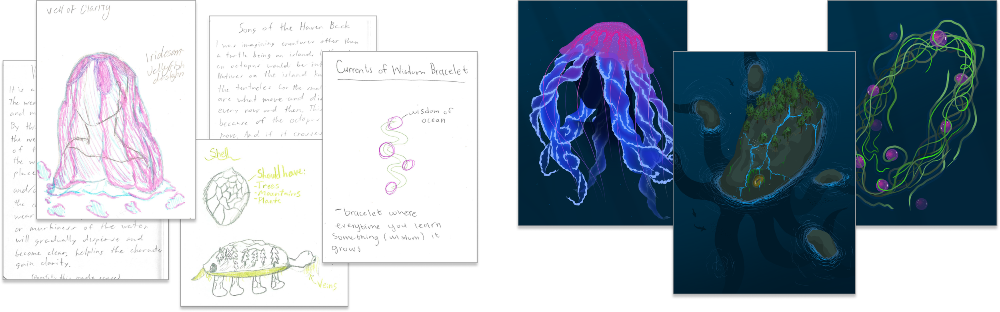
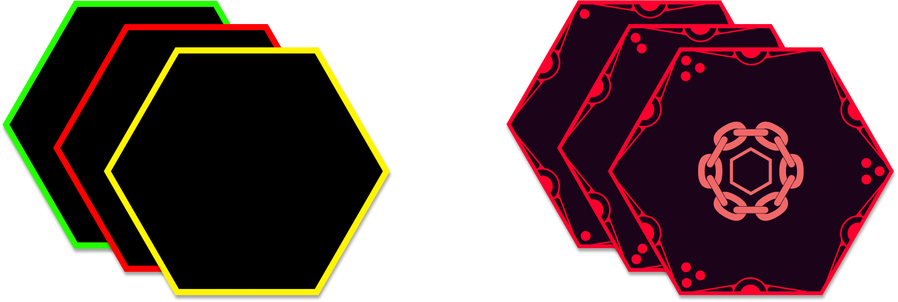
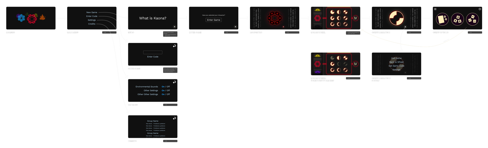
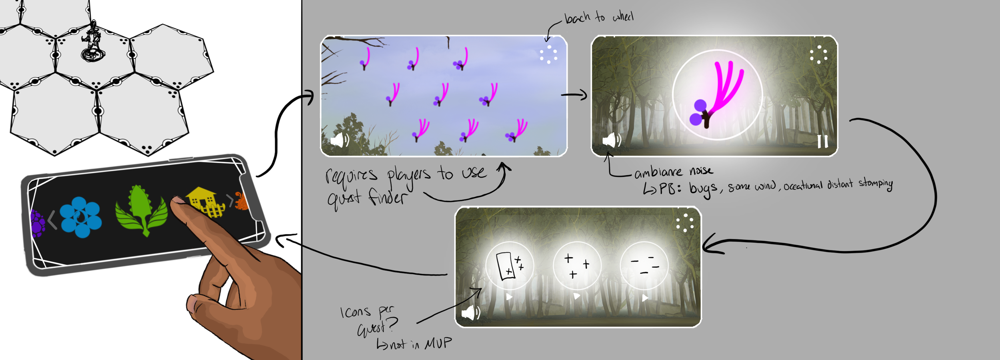
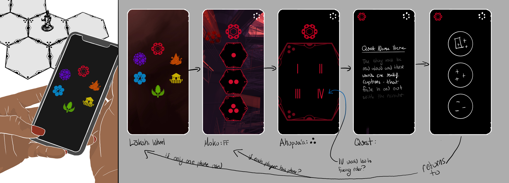
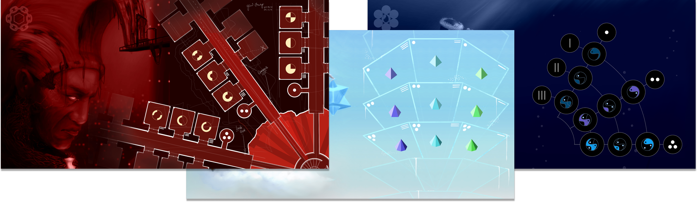

Kaona
Empowering Health Literacy via a Tabletop Role-Playing Game and Mobile “Storytelling” Application, Inspired by Hawaiian Ha‘i Mo‘olelo (Storytelling)
Kaona is a collaboration between Theorycraftist Games, the Pacific Alliance Against COVID-19 (PAAC) team at the Waianae Coast Comprehensive Health Center (WCCHC), and the Ka Moamoa Lab at Georgia Tech. Kaona* is a four-player tabletop RPG and mobile “storyteller” app, designed to foster youth wellbeing from a Kanaka Maoli (Native Hawaiian) perspective, by introducing the values of lōkahi (harmony).
The game takes place in post-apocalyptic moku (realms) that have fallen out of harmony, representing the six domains of the lōkahi wheel. Their environment, characters, and quests are inspired by Hawaiian mo‘olelo (stories and legends), Hawai`i’s history, and life experiences relatable to youth in Wai`anae. Players work together to restore lōkahi in the moku by completing quests and healing corrupted rulers. Kaona’s storyteller app immerses players in the stories and guides first-time RPG players.
Kaona’s collaborative gameplay fosters skills in problem-solving, self-reflection, and community-building. The game’s mo‘olelo, history, and place-based references enable players to mirror situations within their lives and develop approaches to navigate real-life challenges.
*Kaona can be defined as a hidden meaning, or double meanings that signify good or bad fortune. Inoa, or name, holds mana (spiritual power) and is important in identifying intention and purpose.
A Wellness Crisis
Native Hawaiian and other Pacific Islander (NHPI) youth are experiencing a crisis of well-being - increased depression, anxiety, social isolation, and poor school performance - fueled by structural inequities in healthcare, the generational trauma of colonialism, and the COVID-19 pandemic.
During the pandemic, NHPI youth experienced dramatic disruptions in everyday life, while facing high rates of infection, morbidity, and mortality, especially in rural areas such as our community of focus: Wai‘anae and the Leeward coast of O`ahu.
Kaona is a response to this context, providing novel ways to restore well-being and peer-to-peer connection.
Centering Hawaiian Values in Game-Based, Narrative-Based Learning
Game-based and narrative-based learning are promising approaches to addressing wellness concerns, especially for Indigenous communities with deep storytelling practices. Kaona takes a de-centering approach to incorporating traditional practices into learning: uplifting Hawaiian ways of knowing and de-centering Western models of health. This approach is guided by the `Ōlelo No`eau (Hawaiian Proverb):
“I ka wā ma mua, i ka wā ma hope” (“we look to the past as a guide to the future”)
This proverb illustrates how looking into the past allows learning from ancestral knowledge and brings hope for the future. For Kanaka Maoli and Kama`āina (those who grew up in Hawai`i), this reflection comes through mo‘olelo: the stories and legends crucial to Hawaiian culture, displaying how the community builds knowledge.
The Lōkahi Wheel
Kaona’s core pedagogy is rooted in the Hawaiian value of lōkahi, emulating the Lōkahi Wheel wellness model* which depicts six domains of health. The Lōkahi wheel promotes the balance of these domains, meaning that wellness is interconnected, both within oneself and one’s community, making introspection and community-building key learning goals of Kaona.

*The Lōkahi Wheel was developed by Kamehameha Schools, a private school system in Hawai`i, that offers Hawaiian culture-based education, giving preference to students of Hawaiian ancestry.
Community-Engaged Game Dev
Community-engaged game dev encourages co-design and collective knowledge building, resulting in games that are attuned to the community-of-focus. Throughout Kaona’s development, we have hosted 9+ community engagement sessions (10-20 participants each), at schools and community health centers on the Leeward coast of O‘ahu. We gathered community and student insights through play-testing sessions of 1 to 3 moku, storytelling sessions on narrative & quests, and co-design sessions of items & worldbuilding.

Frequent engagement sessions allow us to rapidly iterate on Kaona, addressing issues as soon as they emerged, proactively integrating community perspectives, and ultimately ensuring Kaona is a positive and authentic experience for Kanaka Maoli and Kama‘āina youth.

During co-design sessions, students sketched item concepts by hand, which we then translated into finished digital item art, like the Iridescent Jellyfish design and Currents of Wisdom Bracelet shown above.
World-building & Quests
In the world of Kaona, each Lōkahi wheel domain manifests as a moku (realm), representing what imbalance looks like in its corresponding Lōkahi domain. These moku - their environment, inhabitants, rulers, and quests - are inspired by Hawaiian mo‘olelo and history, and place-based references relatable to Wai‘anae youth. For example, the Work & School domain becomes Moku Hana, a simulation that traps the players in the Wai`anae coast in the 1880s, when Western business interests dominated the communities.
Game Art & Visual Design
Design Consideration: Six Realms, One Game. Each moku has distinct art and visual/UI design, reflecting the cultures of these realms while delivering a cohesive overall gaming experience. The art conveys the six moku to the players, often mirroring familiar landscapes, legendary Hawaiian figures, and historical references.
Codesign. During co-design sessions on item and rulebook art, students were prompted with summaries of moku and items’ abilities. Students drew/penned each item`s look, function, feel, and significance. We included generated ideas as direct scans or inspiration for art.
Moku-Specific UI. The UI design was a delicate balance of functionality and aesthetic appeal, prominently featuring art while easily presenting needed information. Using the design system colors and icons, each moku is distinct, making it easy for players to recognize which moku a game element is part of. This approach, first used with the item cards, set a standard for the game's UI, ensuring both cohesion and distinctiveness for each moku.

Tile and Quest System Enhancement. The game's tile and quest system, initially differentiated by three bright colors, was refined with a new frame concept. This introduced dot indicators for grouping tiles, making world associations clear and intuitive. This subtle design choice improved visual consistency and gameplay comprehension.

Quest Chart Design. Transforming the standard quest charts, the new design integrated the gameplay mechanics with the thematic elements of each world. For example, in the Friends and Family world, themed as a prison, the quest chart was reimagined as a prison floor plan.

Application Design
Design Consideration: A Diverse Range of Players and Classroom Use. An inclusive gaming experience is critical for Kaona, given its broad audience within a high school classroom. Novice gamers may perceive games as not "for" them, hindering their engagement. By making Kaona accessible and enticing for all skill levels, we aim to eliminate barriers to participation.
To address the needs of those unfamiliar with gaming or "DMing," we're implementing a digital "DM" assistant. This assistant will guide players through quests and enrich the experience with narrated stories and soundscapes for each moku, fostering an immersive and welcoming environment for every player.
We considered a hand-held version of this app for each player's personal phone, but found this could lead to distraction and had too many unknowns if each player needed a reliable phone. To minimize distraction, we are pursuing a table-top use for the mobile app, which only requires one phone, and is optimized for horizontal usage.
In Progress: Wireframes
Game Intro — provides players with just enough info to understand why they`re transported to Kaona, and for selecting their characters. We're exploring a narrative of being called by an “Ancestor,” to heal the “distortion” in Kaona.

Entry Sequence — guides players through setting up the board, in a manner that keeps players immersed. The Ancestor tells players they need to place the necessary pieces in a certain formation, to initiate their journey to Kaona.

Lōkahe Wheel – Main Navigation — the main navigation screen in the app is a pad-lock type wheel, that represents each moku and their corresponding 9 quest symbols. To ensure the app does not become the primary focus of the game, it does not hold all the necessary information for players to explore quests.


Additional early exploration sketches for the quest-finder mechanic and a leaderboard/progression concept, both still being scoped for a future iteration:



Findings so far…
Semi-formal interviews of team members reveal the potential for meaningful student engagement through culturally-rooted and place-based elements and the pedagogical impact of collaborative gameplay in modifying student behavior towards peer-to-peer communication and group problem-solving.
Cultural Relevance Improved Player Engagement. Students resonated with the culturally revitalizing and place-based aspects of Kaona, improving student engagement and pedagogical function. When students interacted with a quest in Moku Hana, set in 1880s Wai`anae, students immediately recognized the parallels to their home and became more interested in the quest details. P2 (Game Artist) noted that this resonating quality, in combination with fantasy representation, seemed to be what drew students in the most.
Collaborative Gameplay Modified Player Behavior. Kaona’s collaborative gameplay shifted students’ behavior from individual competition to collaboration. P1 (Game Developer) described this as Kaona’s “self regulating” nature, as it reinforced player collaboration, even modifying behavior of highly competitive gamers, as there was social pressure not to ruin the game for the group. Players typically began with very competitive attitudes, but player strategies changed towards collaboration as they realized the increased potential of collaborative moves, along with the game’s penalty for not working together: if one person “dies,” then everyone does, restarting the game.
Reflection
Cultural Humility and Respect: This project was the first project I was part of in the Ka Moamoa Lab, and my first project with groups in Hawai‘i. My experience working at Veggie Mijas, a Latine food justice organization, emphasized the importance of cultural relevancy and de-centering Western perspectives. However, the work at VM was within my own community and Kaona presented my first experience along the same themes, but as an outsider to the community of focus - Native Hawaiians.
Artistic Growth: This project has significantly spurred my growth as an artist. Collaborating with Alika, the incredibly talented primary game artist on this project, has challenged me to learn quickly, adapt, and push the boundaries of my illustrative skills.
Game Design and Worldbuilding: This project has provided valuable experience in game design and worldbuilding, expanding my understanding of how to craft engaging experiences for players and shape intricate game worlds.